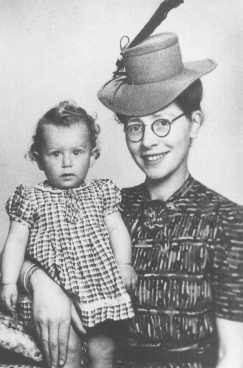

Semmy Woortman-Glasoog (à droite), portant Lientje (à gauche), un bébé juif qu'elle cachait.
Elle faisait partie d'un réseau qui s'occupait de trouver des familles adoptives aux enfants juifs.
Des actes héroïques
Durant la seconde Guerre Mondiale, la majorité des Européens ont eu un comportement indifférent vis à vis de la situation des Juifs.
Certains par peur des sanctions. D'autres ont également colaboré avec les autorités. Mais ils furent nombreux à tenter de protéger les populations juives, que ce soit en les cachant, ou en les aidant à se rendre en zone libre.
Ils mettaient leur vie en danger, afin de secourir des familles entières.
Pour sauver des enfants, des personnes les adoptaient en les faisant passer pour leur enfant.
D'autres particuliers cachaient des familles entières, dans leur grenier, ou dans leurs caves.
Un véritable réseau
Afin de sauver les Juifs d'Europe, de véritables organisations vont être créée. En France, ces réseaux seront particulièrement actifs afin de lutter contre les occupants et le régime de Vichy.
On estime que près de 3/4 des Juifs résidant en France échapperont à la Shoah. Des Hommes de tous les milieux religieux ont participé à cette aide. On peut prendre pour exemple un village français, Chambon sur Lignon, qui donna asile à plusieurs milliers de personnes.
Le pasteur local poussa les villageois locaux à accueillir des familles entières chez eux.
"En honorant ceux qui ont refusé de se plier à la fatalité de la volonté exterminatrice de l'idéologie nazie, la médaille des Justes contribue à rétablir l'Histoire dans sa vérité."
Simone Veil, à propos des "Justes parmi les Nations", Hommes qui ont sauvé des juifs au péril de leur vie.